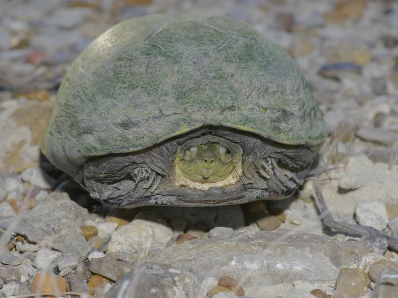

米国中部〜メキシコ北部の乾燥地帯に生息する小〜中型ドロガメ。腹甲が黄みを帯びることが特徴。乾燥気候への適応能力が高く、雨季のみ水中に入る陸生傾向が強い珍しいドロガメ。

1年後の甲長は8〜11cm程度。テキサス〜メキシコ北部の半乾燥草原に生きる種で、雨季に活動し乾季に土の中で夏眠するサイクルを持つ。黄色みのある皮膚・甲羅が名前の由来で、底を歩く底生行動が主体。雨季には積極的に採食し体力を蓄える傾向がある。
10年後は甲長11〜15cm、重さ250〜450g程度が多い。40〜60cm水槽で安定して飼えるサイズ感。15〜30年の寿命があり、季節管理（雨季・乾季のサイクル再現）をどこまで取り入れるかが飼育スタイルを決める重要な選択になりやすい。
キイロドロガメは本来乾季になると水場を出て土の中で過ごす種。飼育下でも季節変化に合わせて陸に上がろうとする行動が見られやすい。この行動を「脱走」「具合が悪い」と誤解して水場に戻し続けると、種本来の季節サイクルが乱れやすい。上陸・夏眠習性を最初に把握し、陸場と水場を両立した環境設計をしておくことが安定飼育につながりやすい。
米国テキサス・オクラホマ・カンザス州からメキシコ北部の半乾燥草原・砂漠縁辺部の一時的な水域に生息。雨季に繁殖・採食し、乾季には土の中で夏眠する。水がない時期が長い独特の生活史を持つ。
水深は浅めが適切（甲幅以下）。深い水では溺れるリスクがあります。陸場には乾燥系の床材（バーミキュライト等）を薄く敷くと本種の習性に合います。
← 横にスクロールできます
| 種名 | 甲長 | 難易度 | 必要水槽 | 特徴 |
|---|---|---|---|---|
| キイロドロガメ このページ | 10〜14cm | 中級 | 30〜45cm陸場広め | 本種・乾燥適応・陸生 |
| トウブドロガメ | 9〜12cm | 入門 | 30〜45cm | 入門・水棲寄り |
| ミスジドロガメ | 9〜12cm | 入門〜中級 | 30〜45cm | 縦縞・水棲 |
| サラドロガメ | 15〜20cm | 中級 | 45〜60cm | 同系統・大型 |